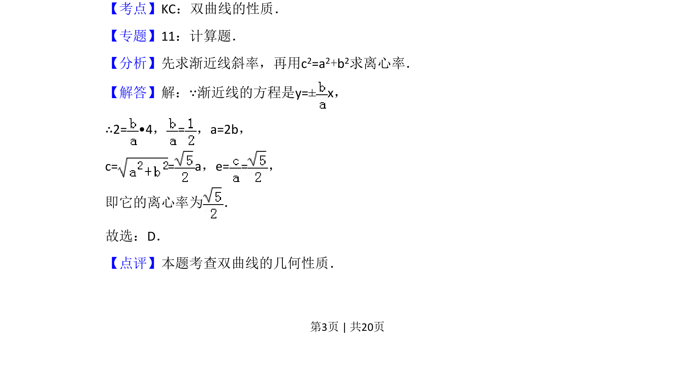

2010-文-05
考点：双曲线性质 渐近线 离心率
题面
摘要
求双曲线渐近线经过给定点时的离心率
关联考点
答案与解析


📄 原 PDF 第 3 页：
素材/真题/吉林/2008-2024·（吉林）数学高考真题/2010年高考数学试卷（文）（新课标）（解析卷）.pdf
题干文本
5．（5分）中心在原点，焦点在x轴上的双曲线的一条渐近线经过点（4，2）， 则它的离心率为（ ） A．B．C．D．
解析文本
【考点】KC：双曲线的性质．菁优网版权所有 【专题】11：计算题． 【分析】先求渐近线斜率，再用c2=a2+b2求离心率． 【解答】解：∵渐近线的方程是y=±x， ∴2= •4，=，a=2b， c= = a，e= =， 即它的离心率为 ． 故选：D． 【点评】本题考查双曲线的几何性质．